🛰️ Yerel önizleme — GitHub profil genişliğini (1012px) simüle eder.
Tüm animasyonlar tarayıcıda canlı çalışır. Dış servisler (typing, streak, badges)
internet bağlantısı ister. Kurulum için SETUP.md dosyasını okuyun.
